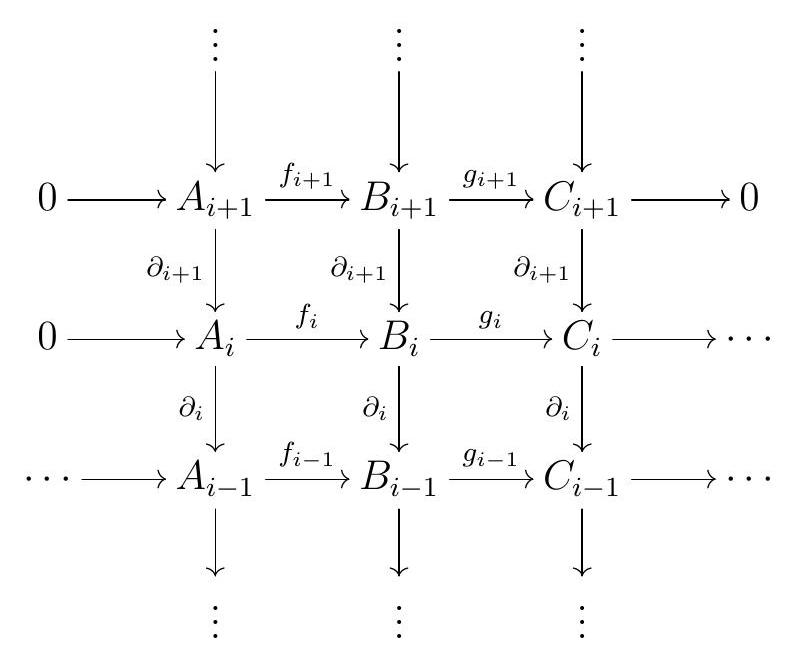

We are finally ready to introduce the category of chain complexes, and to talk more about exact sequences in homology.
SubsectionEstablishing \(\mathrm{Ch}(R)\)
“A chain is no stronger than its weakest link, and life is after all a chain.”
―William James
Unsurprisingly, we can form a category of complexes, but to do that we need the right definition of maps between complexes. We also take this section as a chance to set up some definitions we will need later. One thing to keep in mind as we build our basic definitions: we also want homology to be functorial.
Definition2.1.Chain Map.
Let \(\left(F_{\bullet}, \partial_{\bullet}^{F}\right)\) and \(\left(G_{\bullet}, \partial_{\bullet}^{G}\right)\) be complexes. A map of complexes or a chain map, which we write as \(h:\left(F_{\bullet}, \partial_{\bullet}^{F}\right) \longrightarrow\left(G_{\bullet}, \partial_{\bullet}^{G}\right)\) or simply \(h: F \longrightarrow G\text{,}\) is a sequence of homomorphisms of \(R\)-modules \(h_{n}: F_{n} \longrightarrow G_{n}\) such that the following diagram commutes:
This means that \(h_{n} \partial_{n+1}^{F}=\partial_{n+1}^{G} h_{n+1}\) for all \(n\text{.}\)
Convention2.2.Map vs. Chain Map.
Note that throughout, whenever we call a function \(f: M \rightarrow N\) between \(R\)-modules \(M\) and \(N\) a map, we really mean to say it is a homomorphism of \(R\)-modules.
Example2.3.Zero and Identity Chain Maps.
The zero and the identity maps of complexes \(\left(F_{\bullet}, \partial_{\bullet}\right) \longrightarrow\left(F_{\bullet}, \partial_{\bullet}\right)\) are exactly what they sound like: the zero map \(0_{F_{\bullet}}\) is 0 in every homological degree, and the identity map \(1_{F_{\bullet}}\) is the identity in every homological degree.
This is the notion of morphism we would want to form a category of chain complexes.
Definition2.4.Category of Chain Complexes.
Let \(R\) be a ring. The category of chain complexes of \(R\)-modules, denoted \(\mathrm{Ch}(R-\mod)\) or simply \(\mathrm{Ch}(R)\text{,}\) is the category with objects all chain complexes of \(R\)-modules and arrows all maps of complexes of \(R\)-modules.
Convention2.5.\(\mathrm{Ch}(\mathrm{Ab})\).
When \(R=\mathbb{Z}\text{,}\) we write \(\mathrm{Ch}(\mathrm{Ab})\) for \(\mathrm{Ch}(\mathbb{Z})\text{,}\) the category of chain complexes of abelian groups.
Note that the identity maps defined above are precisely the identity arrows in the category of chain complexes.
Exercise2.6.Understanding \(\mathrm{Ch}(R)\).
Verify that \(\mathrm{Ch}(R\mod)\) is indeed a category.
Show that the isomorphisms in the category \(\mathrm{Ch}(R)\) are precisely the maps of complexes
such that \(h_{n}\) is an isomorphism for all \(n\text{.}\)
This is a good notion of map of complexes: it induces homomorphisms in homology, which in particular allows us to say that homology is a functor.
Lemma2.7.Induced Homomorphisms on Homology.
Let \(h:\left(F_{\bullet}, \partial_{\bullet}^{F}\right) \longrightarrow\left(G_{\bullet}, \partial_{\bullet}^{G}\right)\) be a map of complexes. For all \(n, h_{n}\) restricts to homomorphisms
\(B_{n}(h): B_{n}\left(F_{\bullet}\right) \longrightarrow B_{n}\left(G_{\bullet}\right)\) and
As a consequence, \(h\) induces homomorphisms on homology \(\mathrm{H}_{n}(h): \mathrm{H}_{n}\left(F_{\bullet}\right) \longrightarrow \mathrm{H}_{n}\left(G_{\bullet}\right)\text{.}\)
Proof.
Since \(h_{n} \partial_{n+1}^{F}=\partial_{n+1}^{G} h_{n+1}\text{,}\) any element \(a \in B_{n}\left(F_{\bullet}\right)\text{,}\) say \(a=\partial_{n+1}^{F}(b)\text{,}\) is taken to
so \(h_{n}(a) \in \operatorname{ker} \partial_{n}^{G}=Z_{n}\left(G_{\bullet}\right)\text{.}\) Finally, the restriction of \(h_{n}\) to \(Z_{n}\left(F_{\bullet}\right) \longrightarrow Z_{n}\left(G_{\bullet}\right)\) sends \(B_{n}\left(F_{\bullet}\right)\) into \(B_{n}\left(G_{\bullet}\right)\text{,}\) and thus it induces a well-defined homomorphism on the quotients \(\mathrm{H}_{n}\left(F_{\bullet}\right) \longrightarrow \mathrm{H}_{n}\left(G_{\bullet}\right)\text{.}\)
Definition2.8.Induced Map in Homology.
Let \(h:\left(F_{\bullet}, \partial_{\bullet}^{F}\right) \longrightarrow\left(G_{\bullet}, \partial_{\bullet}^{G}\right)\) be a map of complexes. We call the map
the induced map in homology, and sometimes denote it by \(h_{*}\text{.}\)
Exercise2.9.Homology Functor.
One can show that \(\mathrm{H}_{n}\) preserves compositions, and that moreover, the map in homology induced by the identity is the identity. Thus taking \(n\)th homology is a functor
\begin{equation*}
\mathrm{H}_{n}: \mathrm{Ch}(R) \longrightarrow R \text {-Mod }
\end{equation*}
which takes each map of complexes \(h: F_{\bullet}, \longrightarrow G_{\bullet}\) to the \(R\)-module homomorphism
A map of chain complexes \(h\) is a quasi-isomorphism if it induces an isomorphism in homology, meaning \(\mathrm{H}_{n}(h)\) is an isomorphism of \(R\)-modules for all \(n\text{.}\) If there exists a quasi-isomorphism between two complexes \(C\) and \(D\text{,}\) we say that \(C\) and \(D\) are quasi-isomorphic, and write \(C \simeq D\text{.}\)
Remark2.11.
Note that saying that if \(f\) is a quasi-isomorphism between \(F\) and \(G\) is a stronger statement that the fact that \(\mathrm{H}_{n}(F) \cong \mathrm{H}_{n}(G)\) for all \(n\text{:}\) it also says that there are isomorphisms \(\mathrm{H}_{n}(F) \cong \mathrm{H}_{n}(G)\) that are all induced by \(f\text{.}\)
Not all quasi-isomorphisms are isomorphisms, as the following example shows:
Exercise2.12.
Let \(\pi\) denote the projection map from \(\mathbb{Z}\) to \(\mathbb{Z} / 2 \mathbb{Z}\text{.}\) The chain map
is a quasi-isomorphism.
Solution.
When we look at the induced map of \(f\) on homology, the only index where the induced homomorphism may not be \(0\) is at \(0\text{.}\) Observe however, that \(H_0(\pi):\Z/2\to\Z/2\) is the identity map, as \(0\) is mapped to \(0\) and \(1\) is mapped to \(1\text{.}\) Thus \(f\) is indeed a quasi-isomorphism.
SubsectionHomotopy
“Transformation is not automatic. It must be learned; it must be led.”
―W. Edwards Deming
Definition2.13.Homotopy.
Let \(f, g: F \longrightarrow G\) be maps complexes. A homotopy, sometimes referred to as a chain homotopy, between \(f\) and \(g\) is a sequence of maps \(h_{n}: F_{n} \longrightarrow G_{n+1}\)
for all \(n\text{.}\) If there exists a homotopy between \(f\) and \(g\text{,}\) we say that \(f\) and \(g\) are homotopic or that they have the same homotopy type. We write \(f \simeq g\) to say that \(f\) and \(g\) are homotopic. If \(f\) is homotopic to the zero map, we say \(f\) is nullhomotopic, and write \(f \simeq 0\text{.}\) This should not be confused with the notation \(C \simeq D\) on complexes.
Exercise2.14.Homotopy is an Equivalence Relation.
Homotopy is an equivalence relation.
The equivalence classes under homotopy are called homotopy classes. Homotopy is an interesting equivalence relation because homotopic maps induce the same map on homology.
Lemma2.15.Nullhomotopic Maps Induce Zero Map in Homology.
Let \(f, g:\left(F_{\bullet}, \partial_{\bullet}^{F}\right) \longrightarrow\left(G_{\bullet}, \partial_{\bullet}^{G}\right)\) be maps of complexes. If \(f\) is homotopic to \(g\text{,}\) then \(\mathrm{H}_{n}(f)=\mathrm{H}_{n}(g)\) for all \(n\text{.}\) In particular, every nullhomotopic map induces the zero map in homology.
Proof.
Let \(f, g:\left(F_{\bullet}, \partial_{\bullet}^{F}\right) \longrightarrow\left(G_{\bullet}, \partial_{\bullet}^{G}\right)\) be homotopic maps of complexes, and let \(h\) be a homotopy between \(f\) and \(g\text{.}\) We claim that the map of complexes \(f-g\) (defined in the obvious way) sends cycles to boundaries. If \(a \in Z_{n}\left(F_{\bullet}\right)\text{,}\) then
The map on homology induced by \(f-g\) must then be the \(0\) map, so \(f\) and \(g\) induce the same map on homology. Here we are implicitly using the fact that \(\mathrm{H}_{n}(f+h)=\mathrm{H}_{n}(f)+\mathrm{H}_{n}(g)\text{,}\) which we leave as an exercise to be further explored in Remark 3.8.
Notice, however, that the converse is false: the induced map in homology can be the zero map (for all homological degrees) even if the original map of complexes is not nullhomotopic.
Exercise2.16.
Consider the following map of complexes:
Show that this map is not nullhomotopic, but that the induced map in homology is zero.
Definition2.17.Homotopy Equivalent.
If \(f:\left(F_{\bullet}, \partial_{\bullet}^{F}\right) \longrightarrow\left(G_{\bullet}, \partial_{\bullet}^{G}\right)\) and \(g:\left(G_{\bullet}, \partial_{\bullet}^{G}\right) \longrightarrow\left(F_{\bullet}, \partial_{\bullet}^{F}\right)\) are maps of complexes such that \(f g\) is homotopic to the identity map on \(\left(G_{\bullet}, \partial_{\bullet}^{G}\right)\) and \(g f\) is homotopic to the identity chain map on \(\left(F_{\bullet}, \partial_{\bullet}^{F}\right)\text{,}\) we say that \(f\) and \(g\) are homotopy equivalences and \(\left(F_{\bullet}, \partial_{\bullet}^{F}\right)\) and \(\left(G_{\bullet}, \partial_{\bullet}^{G}\right)\) are homotopy equivalent.
Corollary2.18.Homotopy Equvivalences are Quasi-Isomorphisms.
Homotopy equivalences are quasi-isomorphisms.
Proof.
If \(f:\left(F_{\bullet}, \partial_{\bullet}^{F}\right) \longrightarrow\left(G_{\bullet}, \partial_{\bullet}^{G}\right)\) and \(g:\left(G_{\bullet}, \partial_{\bullet}^{G}\right) \longrightarrow\left(F_{\bullet}, \partial_{\bullet}^{F}\right)\) are such that \(f g\) is homotopic to \(1_{G_{\bullet}}\) and \(g f\) is homotopic to \(1_{F_{\bullet}}\text{,}\) then by Lemma 2.15 the map \(f g\) induces the identity map on homology. So for all \(n\) we have
Therefore, \(\mathrm{H}_{n}(f)\) and \(\mathrm{H}_{n}(g)\) must both be isomorphisms.
The converse is false.
Exercise2.19.
Let \(\pi\) denote the projection map from \(\mathbb{Z}\) to \(\mathbb{Z} / 2 \mathbb{Z}\text{.}\) The chain map
is a quasi-isomorphism but not a homotopy equivalence.
Remark2.20.
The relation \(F \simeq G\text{,}\) meaning "there is a quasi-isomorphism from \(F\) to \(G\) ", is not symmetric: in Exercise 2.19, there is no quasi-isomorphism going in the opposite direction of the one given.
SubsectionComplexes of Complexes
“Every complex problem has a simple solution that doesn’t work.”
―H.L. Mencken
Now that we know about maps between complexes, it’s time to point out that we can also talk about complexes of complexes and exact sequences of complexes. While we will later formalize this a little better when we discover that \(\mathrm{Ch}(R)\) is an abelian category, let’s for now give quick definitions that we can use.
Definition2.21.Subcomplexes and Quotient Complexes.
Given complexes \(B\) and \(C, B\) is a subcomplex of \(C\) if \(B_{n}\) is a submodule of \(C_{n}\) for all \(n\text{,}\) and the inclusion maps \(\iota_{n}: B_{n} \subseteq C_{n}\) define a map of complexes \(\iota: B \longrightarrow C\text{.}\)
Given a subcomplex \(B\) of \(C\text{,}\) the quotient of \(C\) by \(B\) is the complex \(C / B\) that has \(C_{n} / B_{n}\) in homological degree \(n\text{,}\) with differential induced by the differential on \(C_{n}\text{.}\)
Exercise2.22.Subcomplex Maps are Well-Defined.
If \(B\) is a subcomplex of \(C\text{,}\) then the differential \(\partial\) on \(C\) satisfies \(\partial_{n}\left(B_{n}\right) \subseteq B_{n-1}\text{.}\) Therefore, \(\partial_{n}\) induces a map of \(R\)-modules \(C_{n} / B_{n} \longrightarrow C_{n-1} / B_{n-1}\) for all \(n\text{,}\) so that our definition of the differential on \(C / B\) actually makes sense.
We can also talk about kernels and cokernels of maps of complexes.
Definition2.23.Kernel, Cokernel.
Given any map of complexes \(f: B_{\bullet} \longrightarrow C_{\bullet}\text{,}\) the kernel of \(f\) is the subcomplex \(\ker f\) of \(B_{\bullet}\) that we can assemble from the the kernels \(\ker f_{n}\text{.}\) More precisely, \(\operatorname{ker} f\) is the complex
where the differentials are given by restriction of the corresponding differentials in \(C_{\bullet}\text{.}\) The cokernel of \(f\) is the quotient complex \(C_{\bullet} / \operatorname{im} f\text{.}\)
Again, there are some details to check.
Exercise2.24.
Show that the kernel, image, and cokernel of a complex map are indeed complexes.
Definition2.25.Complexes in \(\mathrm{Ch}(R)\).
A complex in \(\mathrm{Ch}(R)\) is a sequence of complexes of \(R\)-modules \(C_{n}\) and chain maps \(d_{n}: C_{n} \longrightarrow C_{n-1}\) between them
such that \(d_{n} d_{n+1}=0\) for all \(n\text{.}\) A complex of complexes is a diagram of the form
where \(C_{i, j}\) is the module in homological degree \(j\) in the complex \(C_{i}\text{.}\) The \(n\)th column corresponds to the complex \(C_{n}\text{,}\) and every row is also a complex. The vertical maps are the differentials on each individual complex; the horizontal maps are the differentials on the complex of complexes.
Given a complex \(C\) in \(\operatorname{Ch}(R)\text{,}\) we can talk about cycles and boundaries, which are a sequence of subcomplexes of the complexes in \(C\text{,}\) and thus its homology. Such a complex is exact if \(\operatorname{im} d_{n+1}=\operatorname{ker} d_{n}\) for all \(n\text{.}\)
Definition2.26.Short Exact Sequences in \(\mathrm{Ch}(R)\).
A short exact sequence of complexes is an exact complex in \(\mathrm{Ch}(R)\) of the form
\begin{equation*}
0 \longrightarrow A \stackrel{f}{\longrightarrow} B \stackrel{g}{\longrightarrow} C \longrightarrow 0 .
\end{equation*}
Equivalently, a short exact sequence of complexes is a commutative diagram

where the rows are exact and the columns are complexes.


.jpg)